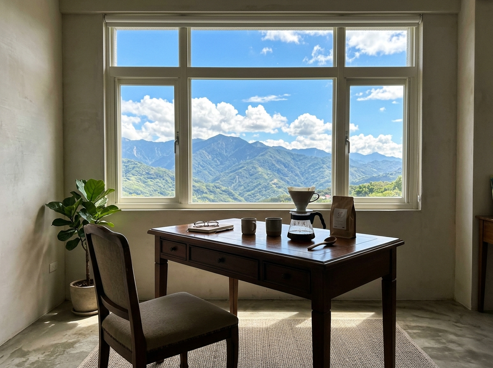

精選咖啡豆
依照季節挑選風味平衡、來源清楚的咖啡豆，讓每一杯都有自己的個性。
A LITTLE PAUSE IN YOUR DAY
在熟悉的香氣裡，找到自己的生活節奏。走進呼拉，讓日常暫時慢一點。

WELCOME TO HULA
呼拉咖啡是一個為日常留白的小角落。我們挑選風味清楚的咖啡豆，細心烘焙、慢慢沖煮，也為每位來訪的人留一個舒服的位置。
看看我們相信的事THE HULA WAY
從豆子到空間，每個細節都希望讓你自在。
依照季節挑選風味平衡、來源清楚的咖啡豆，讓每一杯都有自己的個性。
以合適的烘焙方式呈現咖啡的甜感與香氣，不急著讓風味蓋過彼此。
一張桌、一束光、一杯咖啡。歡迎獨自停留，也歡迎和朋友慢慢聊天。